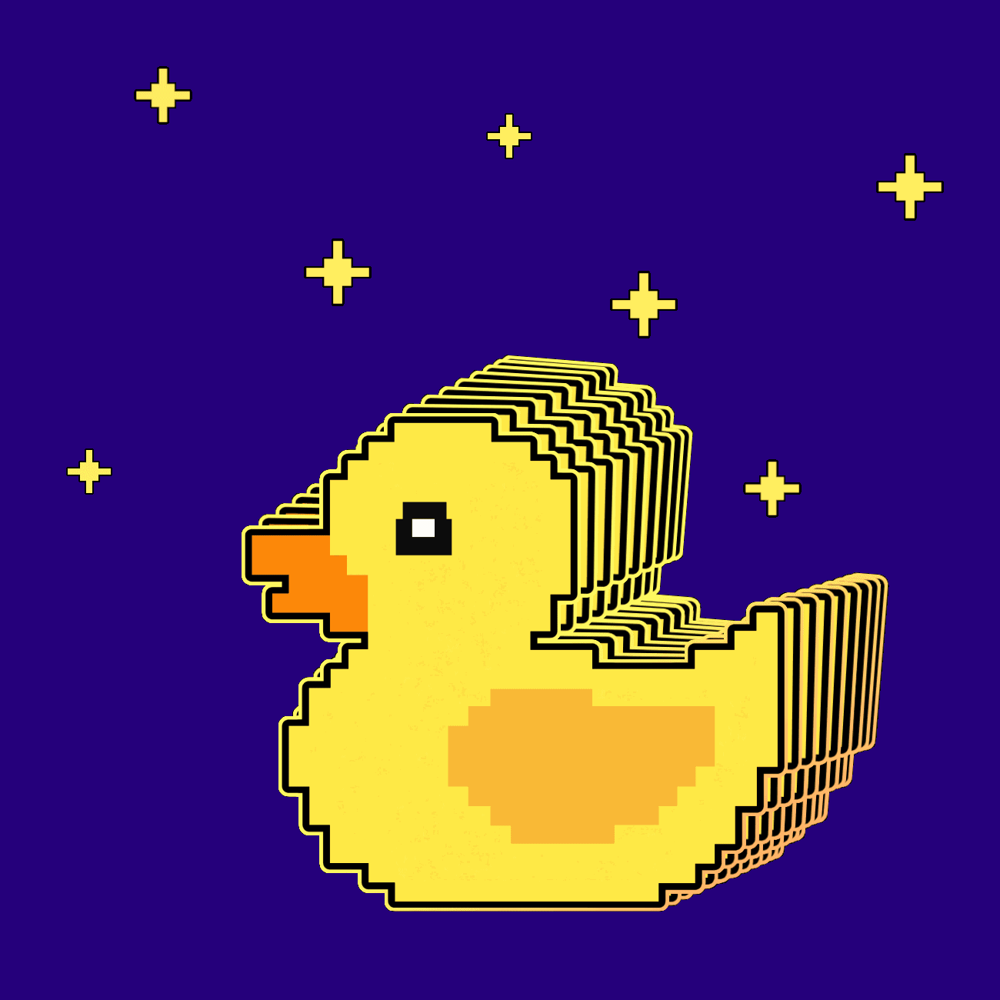

I'm Rishi
a programmer.


Hello.
I am an AI and Web Developer.
I'm passionate about building innovative projects, exploring artificial intelligence, and bringing creative ideas to life through code. I ❤️ technology, robotics, and learning new things every day.
MY SKILLS

Design & Development
I started learning to code because I was fascinated by technology and wanted to understand how things work behind the scenes. Over time, I’ve been building my skills in programming, web development, and artificial intelligence through hands-on projects. I’m currently pursuing a BSc in AI and Machine Learning, with a growing interest in robotics and intelligent systems. My goal is to create innovative projects that combine software, AI, and real-world problem-solving.
The Tech Enthusiast Challenge
My biggest passion is exploring technology and turning ideas into reality through code. From building websites to experimenting with AI and machine learning, I love challenging myself to learn something new. My ultimate goal is to build intelligent robots and create projects that feel like they belong in the future. For me, every bug is a new challenge and every project is an opportunity to innovate.
Get In Touch
If you love technology as much as I do.
Love exploring AI, building websites, and dreaming up futuristic robots? Let's talk about how awesome technology is! We can code, share ideas, and build something amazing together!